NegativePlugNegative quasi-static polyphase plug |
Information
This information is part of the Modelica Standard Library maintained by the Modelica Association.
The negative plug is based on Plug. Additionally the reference angle is specified in the connector. The time derivative of the reference angle is the actual angular velocity of each quasi stationary voltage and current. The symbol is also designed such way to look different than the positive plug.
See also
Connectors (1)
| pin |
Type: Pin[m] Description: Pins of plug |
|---|
Components (1)
| reference |
Type: Reference |
|---|
Used in Components (24)
|
Modelica.Electrical.QuasiStationary.Machines.BasicMachines.Components Partial model of transformer core with 3 windings |
|
|
Modelica.Electrical.QuasiStationary.Machines.Interfaces Partial model of three-phase transformer |
|
| 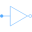 |
Modelica.Electrical.QuasiStationary.MultiPhase.Basic Delta (polygon) connection |
| 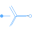 |
Modelica.Electrical.QuasiStationary.MultiPhase.Basic Star connection of multi phase systems consisting of multiple base systems |
| 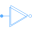 |
Modelica.Electrical.QuasiStationary.MultiPhase.Basic Delta (polygon) connection of multi phase systems consisting of multiple base systems |
|
Modelica.Electrical.QuasiStationary.MultiPhase.Basic Connect one (negative) pin |
|
|
Modelica.Electrical.QuasiStationary.MultiPhase.Basic Connect all (negative) pins |
|
| 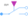 |
Modelica.Electrical.QuasiStationary.MultiPhase.Ideal Multiphase ideal commuting switch |
| 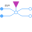 |
Modelica.Electrical.QuasiStationary.MultiPhase.Ideal Multiphase ideal intermediate switch |
| 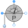 |
Modelica.Electrical.QuasiStationary.MultiPhase.Sensors Power sensor |
| 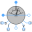 |
Modelica.Electrical.QuasiStationary.MultiPhase.Sensors Multiphase sensor to measure current, voltage and power |
| 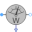 |
Modelica.Electrical.QuasiStationary.MultiPhase.Sensors threephase Aron sensor for active power |
| 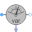 |
Modelica.Electrical.QuasiStationary.MultiPhase.Sensors threephase sensor for reactive power |
| 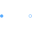 |
Modelica.Electrical.QuasiStationary.MultiPhase.Interfaces Two plugs with pin-adapter |
|
Modelica.Electrical.QuasiStationary.MultiPhase.Interfaces |
|
| 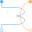 |
MultiPhaseElectroMagneticConverter Modelica.Magnetic.QuasiStatic.FundamentalWave.Components Multi phase electro magnetic converter |
| 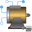 |
Modelica.Magnetic.QuasiStatic.FundamentalWave.BasicMachines.InductionMachines Induction machine with slip ring rotor |
| 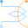 |
Modelica.Magnetic.QuasiStatic.FundamentalWave.BasicMachines.Components Symmetric winding model coupling electrical and magnetic domain |
| 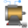 |
Modelica.Magnetic.QuasiStatic.FundamentalWave.BasicMachines.BaseClasses Partial model for quasi static multi phase machines |
| 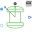 |
Modelica.Magnetic.QuasiStatic.FundamentalWave.Sensors Rotor lagging angle |
| 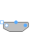 |
Modelica.Magnetic.QuasiStatic.FundamentalWave.Utilities Terminal box Y/D-connection |
|
Modelica.Magnetic.QuasiStatic.FundamentalWave.Utilities Terminal box Y/D-connection |
|
| 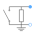 |
Modelica.Magnetic.QuasiStatic.FundamentalWave.Utilities Rheostat which is shortened after a given time |
| 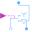 |
Modelica.Magnetic.QuasiStatic.FundamentalWave.Utilities Y-D-switch |